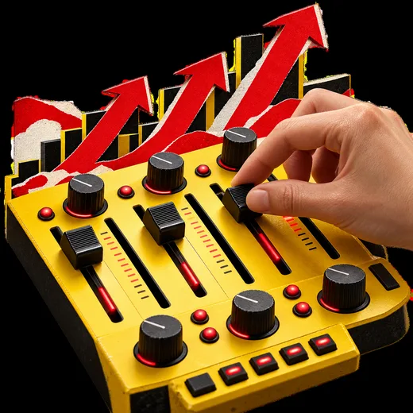

SERVICE
作って終わらせない。
回し続ける、5つのサポート。
設計して、つくって、届けて、振り返る。振り返りで見つけた改善点を次の設計に戻し、この流れを繰り返します。
設計する：ターゲット設計
誰に、何を、どう伝えるか。届けたい相手と伝える軸を決めます。
つくる：集客用ホームページ制作
LP（ランディングページ）を、スマホで読みやすく、無料相談へ進みやすく仕上げます。
準備する：WEB広告設定
Facebook・Instagram広告、Google広告、検索キーワード広告から選んで準備します。
届ける：広告運用代行
設定した相手へ広告を配信し、反応を見ながら調整します。
振り返る：配信後レポート
クリック、広告費、問い合わせ状況を振り返り、次に直すところを見つけます。
続ける振り返りを、次の設計へ
 1設計する
1設計する 2つくる
2つくる 3準備する
3準備する
4届ける- 5振り返る
SERVICE
作って終わらせない。
回し続ける、5つのサポート。
1｜設計する
ターゲット設計
届けたい相手と、伝える軸を決めます。
2｜つくる
集客用ホームページ制作
スマホで読みやすく、相談へ進みやすく。
3｜準備する
WEB広告設定
事業に合う広告を選んで準備します。
4｜届ける
広告運用代行
反応を見ながら配信を調整します。
5｜振り返る
配信後レポート
結果から、次に直すところを見つけます。
この繰り返しで、問い合わせにつながる形に近づけていきます。
SERVICE
作って終わらせない。
回し続ける、5つのサポート。
設計して、つくって、届けて、振り返る。振り返りで見つけた改善点を次の設計に戻し、この流れを繰り返します。
SUPPORT 1｜設計する
ターゲット設計
誰に、何を、どう伝えるか。届けたい相手と伝える軸を決めます。
SUPPORT 2｜つくる
集客用ホームページ制作
LP（ランディングページ）を、スマホで読みやすく、無料相談へ進みやすい文章・構成・デザインに仕上げます。
SUPPORT 3｜準備する
WEB広告設定
Facebook・Instagram広告、Google広告、検索キーワード広告から、事業に合う広告を選んで準備します。
SUPPORT 4｜届ける
広告運用代行
設定した相手へ広告を配信し、反応を見ながら調整します。運用期間は契約前に確認します。
SUPPORT 5｜振り返る
配信後レポート
クリック、広告費、問い合わせ状況を振り返り、次に直すところを見つけます。
SERVICE
作って終わらせない。
回し続ける、5つのサポート。
SERVICE
作って終わらせない。
回し続ける、5つのサポート。
設計して、つくって、届けて、振り返る。振り返ったら、また設計へ。
- 1
設計する
届けたい相手と伝える軸を決める
- 2
つくる
集客用ホームページ（LP）を制作
- 3
準備する
事業に合うWEB広告を設定
- 4
届ける
反応を見ながら広告を運用
- 5
振り返る
結果から次に直すところを見つける